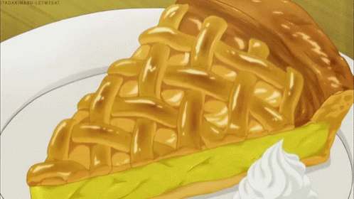

American Apple Pie Recipe

This is THE American Apple Pie
Ingredients
- 1/3 cup of light brown sugar
- 1/3 cup of white sugar
- 1 tablespoon all-purpose flour
- 1 teaspoon lemon juice
- 1/3 teaspoon ground cinnamon
- 7 1/2 cups peeled sliced apples
- 1 cup raisins
- 1 9 inch double crust pie
- 1 egg
Directions
- Preheat oven 425 degrees F. Spray deep dish pie plate
with cooking spray
- Combine white sugar, light brown sugar, lemon, cinnamon
and mix well. Add apples and raisins to sugar mixture; stir until well coated.
- Spoon apple mixture into pie crust. Place second pie crust on top of filling,
and trim edges. Lightly glaze top of pie with a beaten egg, then sprinkled with
a little sugar.
- Bake till golden brown, about 35 to 40 minutes. Place on a wire rack, and cool 30 minutes.
- Enjoy!